Contents
- Display a list of all the classess defined in the nlid_toolbox'
- show all defined methods for class nldat
- Show help for one methods for a class
- Show help summary for all methods for a class nldat
- nldat class - data class
- compute and plot probabilty distribution
- compute and plot spectrum
- Compute and plot autospectrum
- Simulate a second order low pass system
- Correlation properties
- Spectral properties
- Impulse Response function
- Simulate response
- Frequency Response
- Predict response
- Convert IRf to frequency response
- Convert frequency response to IRF
%%nlid_toolbox_demo % % Script to demosntrate basic functionality of nlid_tools % % % Enable cell mode and go through one cell at a time % 29 March 2007 %$ Getting Help % Show Westick & Kearney Paper as an introduction w=which('nlid_demo'); [d,f]=fileparts(w); paperFile=[d '\docs\Westwick_Kearney_2004.pdf']; web(paperFile)
Display a list of all the classess defined in the nlid_toolbox'
nlid_help ('classList');
nlid_tools. Defined classes @cor: cor - correlation class for NLID toolbox @fresp: frequency response class for NLID toolbox @irf: irf - impulse response function class for NLID toolboc. @kern: kern - kernel class for NLID toolbox @lnbl: lnbl - linear-nonlinear block model class for NLID toolbox @lnlbl: lnlbl - linear-nonlinear-linear block model class for NLID toolbox. @nlbl: nlbl - nonlinear-linear block model class for NLID toolbox. @nldat: nldat - data class for NLID toolbox @nlm: nlm - nonlinear model parent class for NLID toolbox. @nltop: nltop - parent class for all NLID classes @param: param - parameter class for NLID toolbox @pcascade: pcascade - parallel cascade model class for NLID toolbox. @pdf: pdf - probabilty distribution function class for NLID toolbox @polynom: polynom - polynomial class for NLID toolbox. @randvar: randvar - random variate class for NLID toolbox @spect: spect - power spectrum class for NLID toolbox. @ssm: State-space model for NLID toolbox @vkern: vkern - Volterra kernel class for NLID toolbox @vseries: vseries - Volterra series model class for NLID toolbox @waveform: waveform - waveform class for NLID toolbox @wkern: wkern - Wiener kernel class for nLID toolbox @wseries: wseries - Wiener series model class for NLID toolbox
show all defined methods for class nldat
methods(nldat)
Methods for class nldat: abs domain fitdist mean random_pdf std angle double fkbi min random_sig subsasgn cat emean get minus rdivide subsref chop end hwrect mtimes real sum cumsum errorPlot iddata nldat reshape uminus ddt ext isnan nlmtst set uplus decimate extract length phase size vaf delay fft line plot smo var detrend fgzw log plus squeeze disp filter max prt stairs
Show help for one methods for a class
help nldat/plot
nldat/plt - overloaded plot function for "nldat" class
plot (d, varagin);
options= 'plotmode' [line] 'plot type (line/xy/Super)
'help_flag' 0 'display help (0=No/1=yes)
nh - number of horizontal plots'
nv - number of vertical plots'
nplt - plot number'
xmode
y mode
Show help summary for all methods for a class nldat
disp('Display help on all methods for a class') nlid_help('nldat');
Display help on all methods for a class nlid_tools. Methods for class: nldat nldat/fgzw: fgzw(t,params) - compute 2-nd order IRF for k,z,w nldat/fkbi: [y,dyda]=fkbi(x,a) - compute second-order IRF for K,B,I nldat/nldat: nldat - data class for NLID toolbox nldat/nlmtst: UNTITLED Test opweration of nldat objects nldat/plot: nldat/plt - overloaded plot function for "nldat" class nldat/random_pdf: usage: y = random_pdf ( type, x, varargin) nldat/random_sig: X - seed signal nldat/vaf: VAF function for nldat sets vf = vaf (x,y, DIM)
nldat class - data class
x=randn(5000,1); X=nldat(x); % Convert real to nldat set(X,'domainIncr',.01,'chanNames',{'testSignal'}, 'comment','Test signal for demosntration purposes', ... 'chanUnits',{'V'} ) % set domain increment disp(X) % Show properties clf plot(X)
ans =
5000x1x1 nldat array with properties:
chanNames: {'testSignal'}
chanUnits: {'V'}
domainIncr: 0.0100
domainName: 'Time (s)'
domainStart: 0
domainValues: NaN
dataSet: [5000x1 double]
dataSize: [5000 1]
comment: 'Test signal for demosntration purposes'
version: '2.01'
5000x1x1 nldat array with properties:
chanNames: {'testSignal'}
chanUnits: {'V'}
domainIncr: 0.0100
domainName: 'Time (s)'
domainStart: 0
domainValues: NaN
dataSet: [5000x1 double]
dataSize: [5000 1]
comment: 'Test signal for demosntration purposes'
version: '2.01'
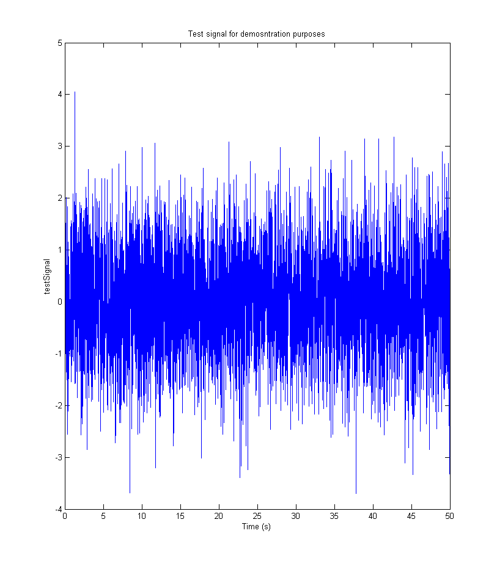 compute and plot probabilty distribution
plot(pdf(X));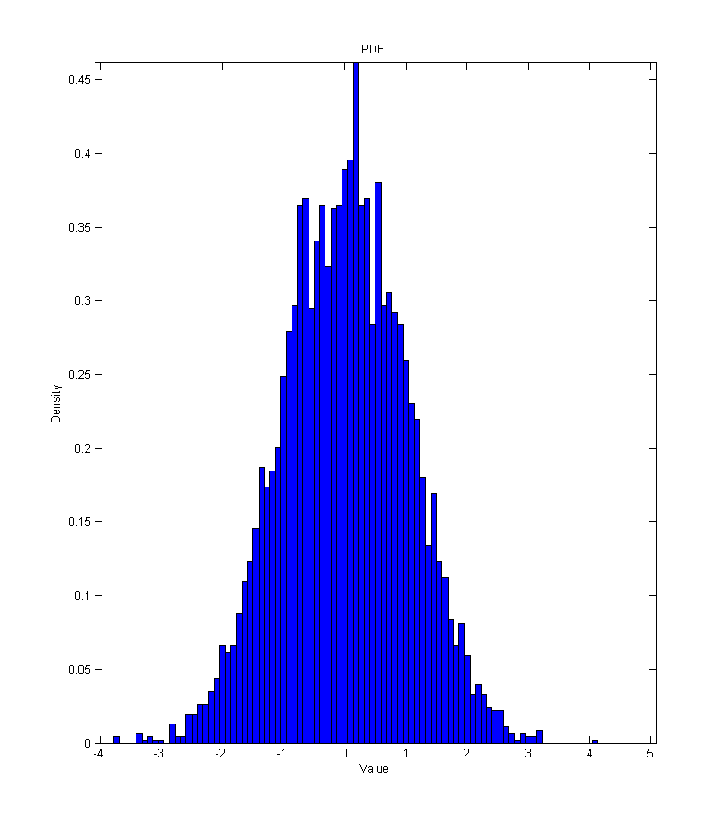
compute and plot spectrum
plot(spect(X))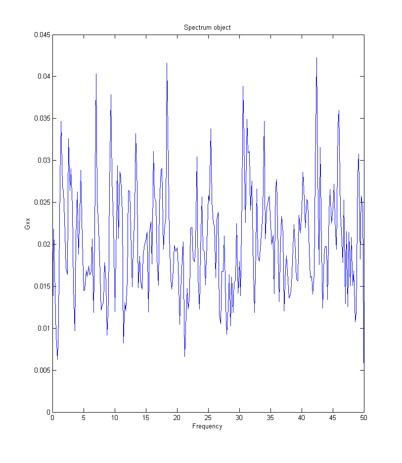
Compute and plot autospectrum
Default parameters
C=cor(X); subplot (3,1,1); plot(C); % Nsides =2 ; subplot(3,1,2); plot(cor(X,'nSides',2)); % Nsides =2 nlags=50;; subplot(3,1,3); plot(cor(X,'nSides',2,'nLags',50));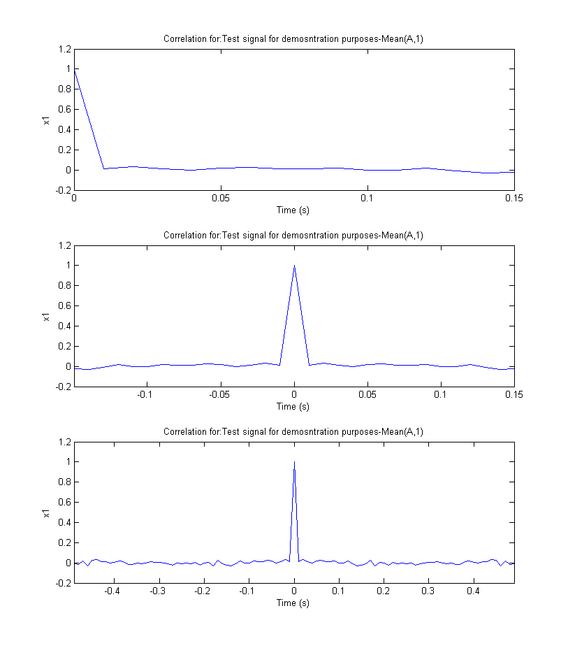
Simulate a second order low pass system
Z = nlid_sim('L1',X);
plot(Z)

Correlation properties
Note that nldat objects are indexed in the same way as matlab variables Input Autocorrelation
nLags=30; subplot(3,1,1); cX = cor(Z(:,1),'nLags',nLags,'comment','Input autocorrelation'); plot(cX); % output autocorrelation subplot (3,1,2); cY = cor(Z(:,2),'nLags',nLags, 'comment','Output autocorrelation'); plot(cY); % Input/output cross correlation subplot(3,1,3); cXY = cor (Z,'nLags',nLags,'comment','Input-output cross-correlation'); plot (cXY);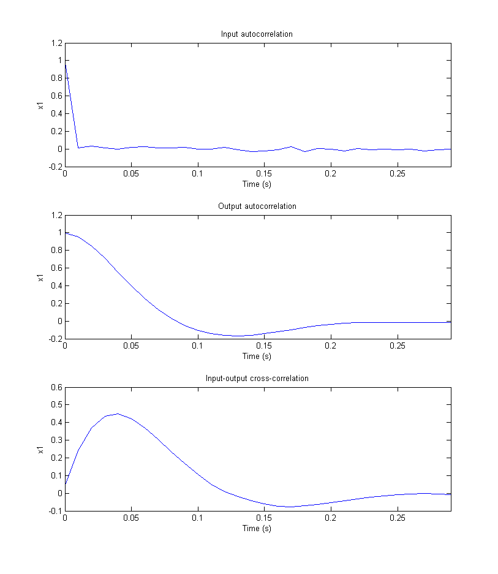
Spectral properties
Input spectrum
nFFT=200; subplot(3,1,1); sX = spect(Z(:,1),'nFFT',nFFT,'comment','Input Spectrum'); plot(sX); % output autocorrelation subplot (3,1,2); sY = spect(Z(:,2),'nFFT',nFFT, 'comment','Output spectrum'); plot(sY); % Input/output cross correlation subplot(3,1,3); sXY = spect (Z,'nFFT',nFFT,'comment','Input-output cross-sprectrum'); plot (sXY);
Warning: Imaginary parts of complex X and/or Y arguments ignored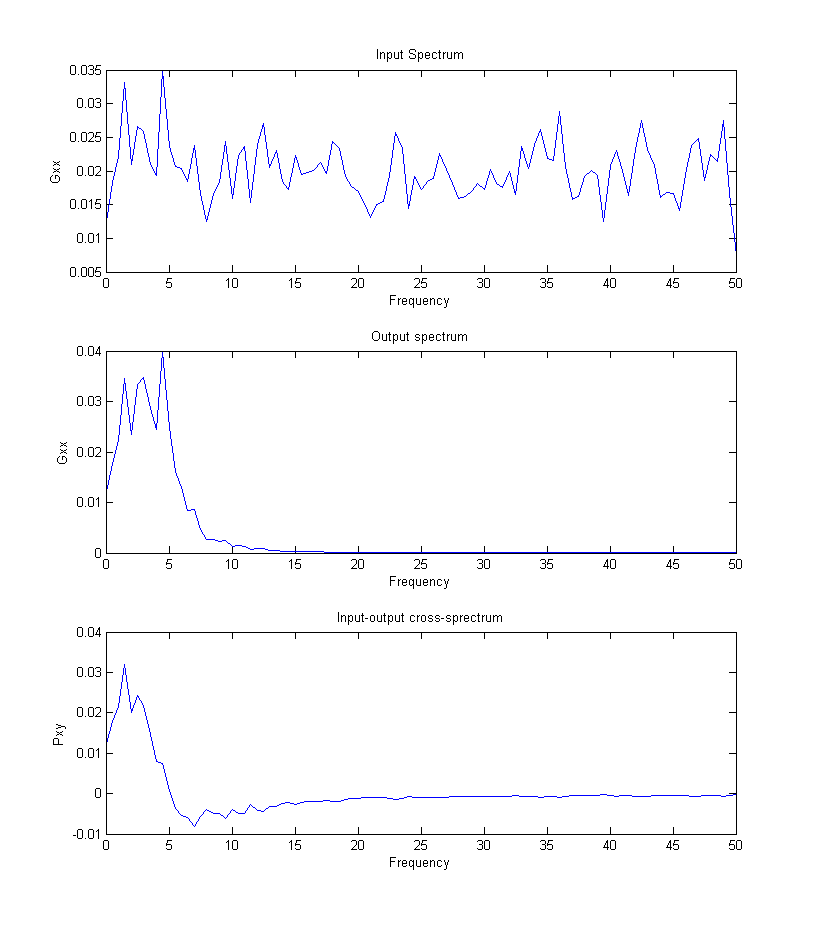
Impulse Response function
I=irf(Z,'nLags',51);
plot(I);
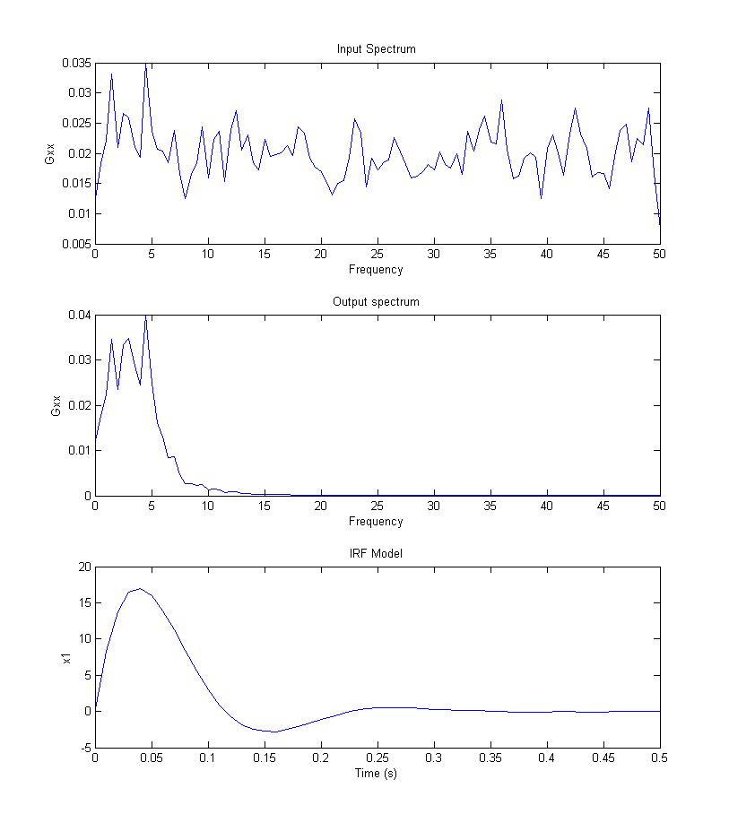 Simulate response
xIn=Z(:,1); yOut=Z(:,2); yPre = nlsim(I,xIn); plot(yPre); yResid = yOut - yPre; set(yResid,'chanNames','Residual'); V=vaf(yOut,yPre); disp(['Variance accounted for:' num2str(double(V))]) Zp=cat(2,yOut, yPre); Zp=cat(2,Zp, yResid); plot(Zp,'nv',3)
Variance accounted for:99.9841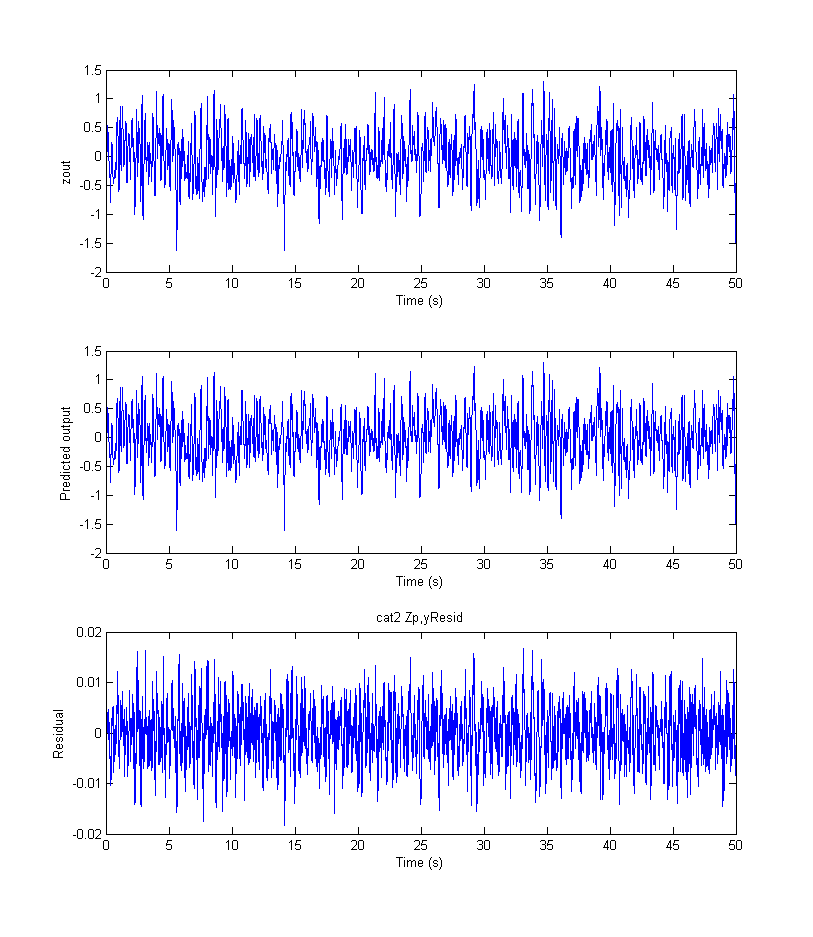
Frequency Response
F=fresp(Z, 'nFFT',50);
plot(F)
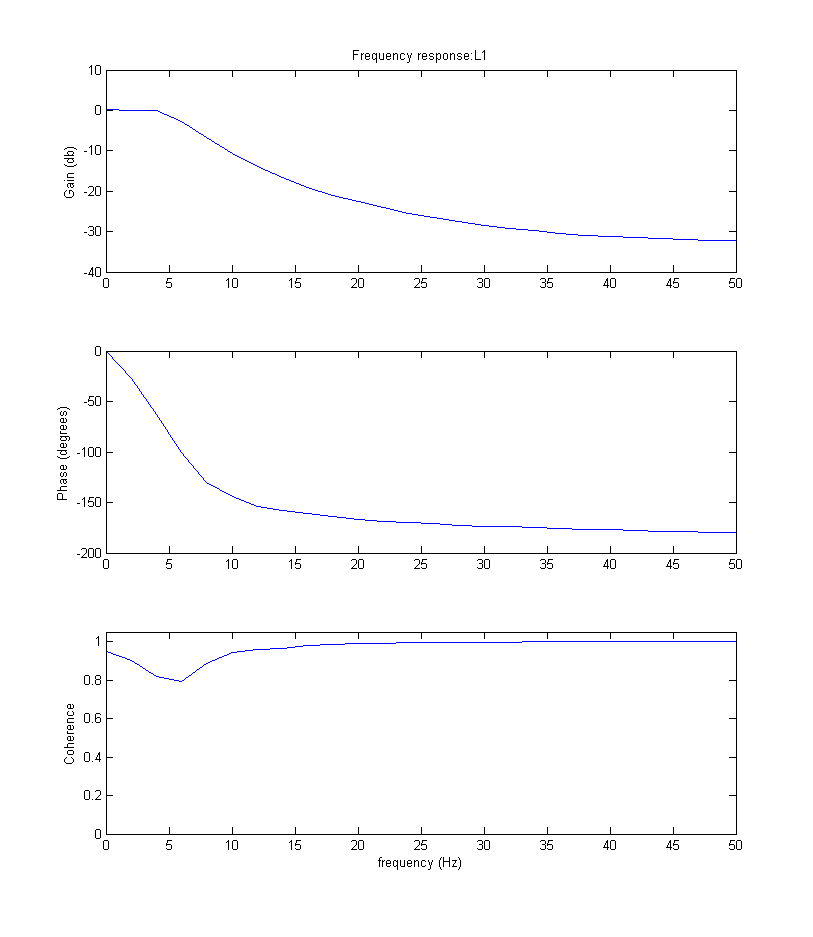 Predict response
yPre = nlsim(F,xIn); plot(yPre); yResid = yOut - yPre; set(yResid,'chanNames','Residual'); V=vaf(yOut,yPre); disp(['Variance accounted for:' num2str(double(V))]) Zp=cat(2,yOut, yPre); Zp=cat(2,Zp, yResid); plot(Zp,'nv',3)
Variance accounted for:98.7332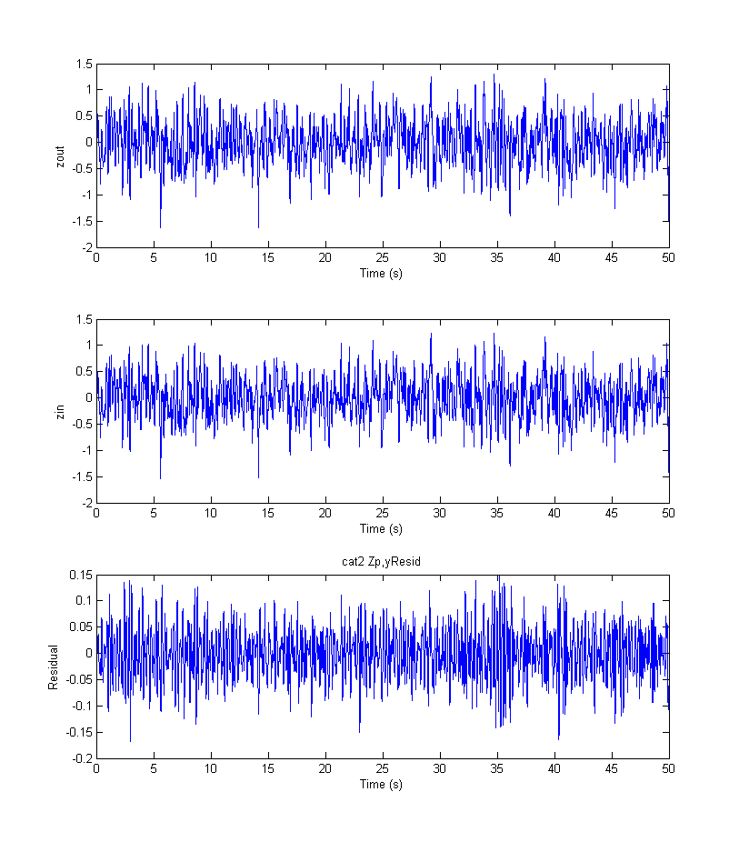
Convert IRf to frequency response
fI = fresp(I); plot(fI);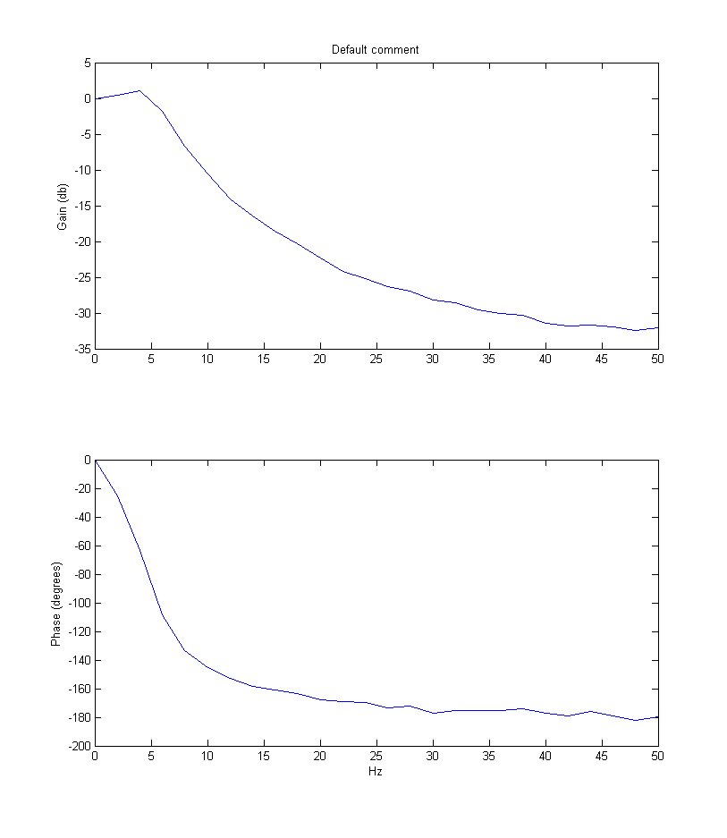
Convert frequency response to IRF
iFreq = irf(F); plot(iFreq);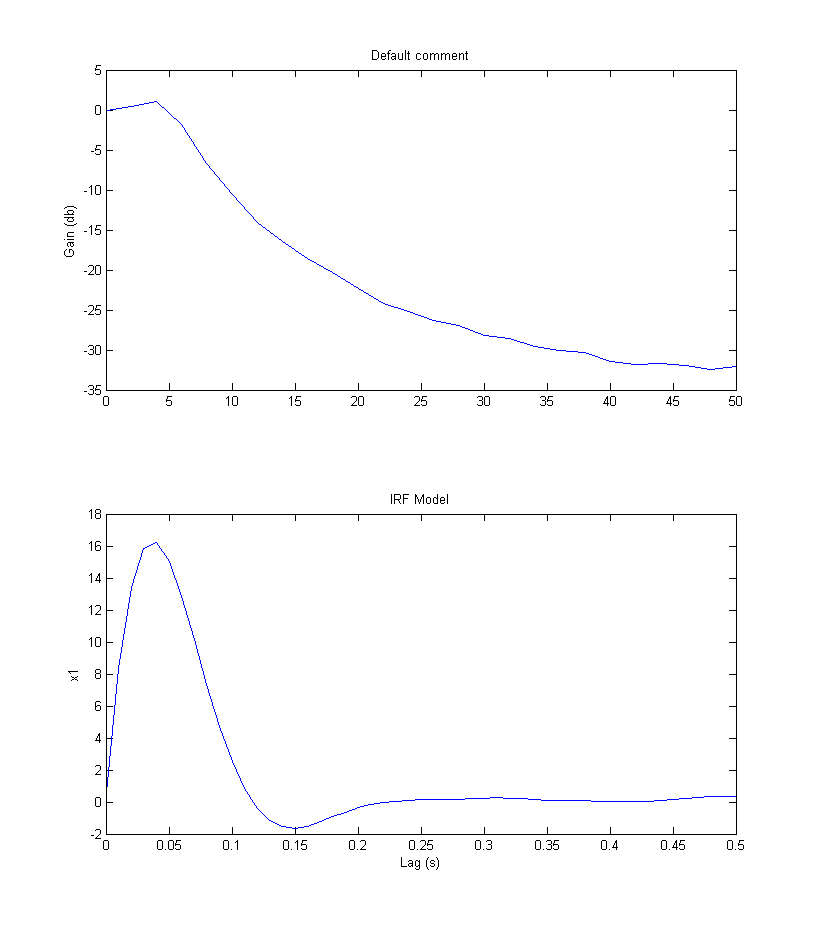